Top 10 Spelers – Gedetailleerde Statistieken
| # | Speler | Foto | Land | Positie | Rugnr. | Interlands | Carrière Goals | Carrière Assists | Belangrijkste Clubs |
|---|---|---|---|---|---|---|---|---|---|
| 1 | Lionel Messi | 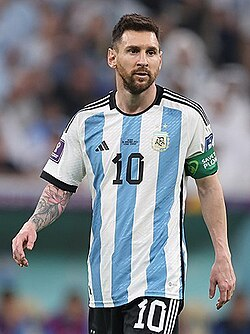 |
Argentinië | Aanvaller / Middenveld | 10 | 172 | ~900 | ~400 |

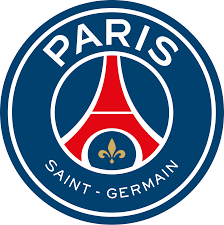 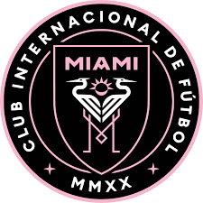 |
| 2 | Cristiano Ronaldo |  |
Portugal | Aanvaller | 7 | 205 | ~970 | ~260 |

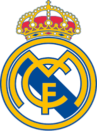 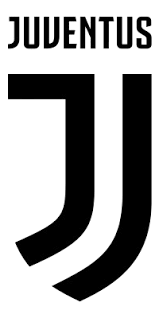 |
| 3 | Pelé | 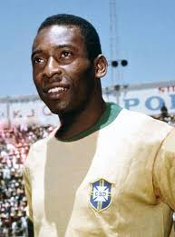 |
Brazilië | Aanvaller | 10 | 92 | ~1280 | ~280 |
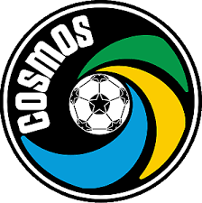 |
| 4 | Diego Maradona | 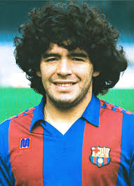 |
Argentinië | Aanvaller / Middenveld | 10 | 91 | ~310 | ~115 |
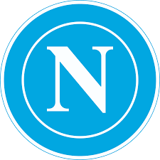 |
| 5 | Johan Cruyff |  |
Nederland | Middenveld / Aanvaller | 14 | 48 | ~330 | ~200 |
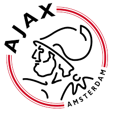
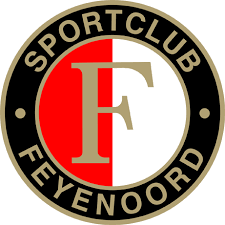 |
| 6 | Zinedine Zidane | Frankrijk | Middenveld | 10 | 108 | ~125 | ~95 | ||
| 7 | Ronaldinho | 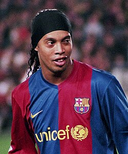 |
Brazilië | Aanvaller / Middenveld | 10 | 97 | ~200 | ~150 |
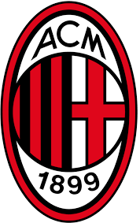 |
| 8 | Ronaldo Nazário | Brazilië | Aanvaller | 9 | 98 | ~350 | ~100 |
|
|
| 9 | Franz Beckenbauer | 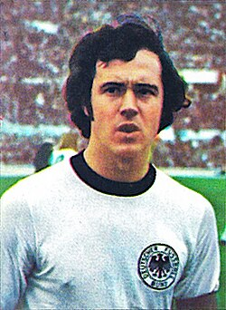 |
Duitsland | Verdediger | 5 | 103 | ~150 | ~90 |
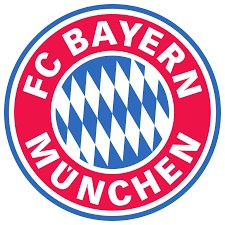 |
| 10 | Neymar | 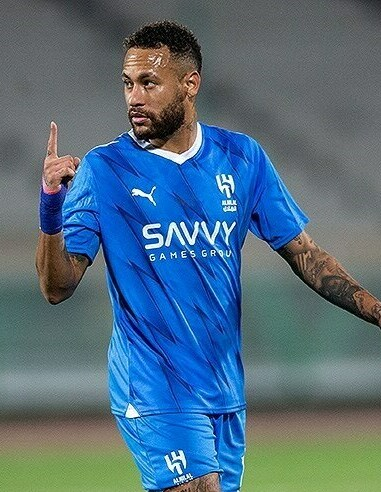 |
Brazilië | Aanvaller | 10 | ~120 | ~436 | ~250 |
|
Carrière highlights
- Messi won het WK 2022 en staat bekend als recordhouder in La Liga.
- Ronaldo is topscorer aller tijden in meerdere competities.
- Pelé en Maradona zijn legendarisch vanwege hun invloed op de sport.
- Neymar heeft honderden assists op zijn naam en blijft tot de top behoren.